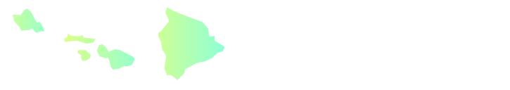

|
|||||||||||
| PREV CLASS NEXT CLASS | FRAMES NO FRAMES | ||||||||||
| SUMMARY: NESTED | FIELD | CONSTR | METHOD | DETAIL: FIELD | CONSTR | METHOD | ||||||||||
java.lang.Object
|
+--com.esri.mo2.map.draw.BaseSymbol
|
+--com.esri.mo2.map.draw.GradientFillSymbol
The GradientFillSymbol class draws any image at the points or nodes of a given feature.
The symbol supports next attrites:
Antialiasing can be true or false, default is false. Transparency is transparency from 0.0 to 1.0, default is 1.0.
Font is font for textstring, default is "Dialog" PLAIN and 12 height.
Type defines type of filling @see #setType, default is "fdiagonal" filling.
The result of the next example is shown on the picture.
GradientFillSymbol gfSymbol = new CalloutMarkerSymbol();

gfSymbol.setAntialiasing(true);
gfSymbol.setTransparency(0.6);
gfSymbol.setType( GradientFillSymbol.GRADIENTFILL_TYPE_HORIZONTAL );
gfSymbol.setStartColor(new Color(255,255,0) );
gfSymbol.setFinishColor(new Color(0,255,255) );
| Field Summary | |
static boolean |
DEFAULT_BOUNDARY
This constant defines the default value of boundary parameter. |
static Color |
DEFAULT_FINISHCOLOR
This constant defines the finish color by default. |
static boolean |
DEFAULT_OVERLAP
This constant defines the default value of overlap parameter. |
static Color |
DEFAULT_STARTCOLOR
This constant defines the start color by default. |
static int |
DEFAULT_TYPE
This constant defines the default value for gradient type of filling. |
static int |
GRADIENTFILL_TYPE_BDIAGONAL
This constant defines the b-diagonal gradient type of filling. |
static int |
GRADIENTFILL_TYPE_FDIAGONAL
This constant defines the gradient type of filling. |
static int |
GRADIENTFILL_TYPE_HORIZONTAL
This constant defines the horizontal gradient type of filling. |
static int |
GRADIENTFILL_TYPE_VERTICAL
This constant defines the vertical gradient type of filling. |
| Fields inherited from class com.esri.mo2.map.draw.BaseSymbol |
DEFAULT_ANTIALIASING, DEFAULT_TRANSPARENCY |
| Constructor Summary | |
GradientFillSymbol()
|
|
| Method Summary | |
void |
draw(FeatureGeometry g,
Graphics2D g2,
Object values)
This method draws the symbol in graphics context. |
boolean |
getBoundary()
Obtains the value of boundary. |
Color |
getFinishColor()
Obtains the value of finish color. |
Dimension |
getMaximumSymbolSize()
Obratins the dimention of the symbol. |
boolean |
getOverlap()
Obtains the value of overlap. |
Color |
getStartColor()
Obtains the value of start color. |
int |
getType()
Obtains the value of gradient fill direction. |
void |
setBoundary(boolean boundary)
Sets the boundary value. |
void |
setFinishColor(Color color)
Sets the value of finish color. |
void |
setOverlap(boolean overlap)
If the value of overlap is true then symbol can overlap else otherwise. |
void |
setStartColor(Color color)
Sets the value of start color. |
void |
setType(int type)
Sets the gradient fill direction. |
| Methods inherited from class com.esri.mo2.map.draw.BaseSymbol |
CalcCentroid, clone, filterShadowImage, filterTransparentImage, getAntialiasing, getFieldCount, getFieldName, getRenderer, getTransparency, hasTransparency, setAntialiasing, setRenderer, setTransparency, switchTransform |
| Methods inherited from class java.lang.Object |
equals, finalize, getClass, hashCode, notify, notifyAll, toString, wait, wait, wait |
| Field Detail |
public static final int GRADIENTFILL_TYPE_FDIAGONAL
public static final int GRADIENTFILL_TYPE_BDIAGONAL
public static final int GRADIENTFILL_TYPE_HORIZONTAL
public static final int GRADIENTFILL_TYPE_VERTICAL
public static final int DEFAULT_TYPE
public static final Color DEFAULT_STARTCOLOR
public static final Color DEFAULT_FINISHCOLOR
public static final boolean DEFAULT_OVERLAP
public static final boolean DEFAULT_BOUNDARY
| Constructor Detail |
public GradientFillSymbol()
| Method Detail |
public void draw(FeatureGeometry g,
Graphics2D g2,
Object values)
g - the Geometryg2 - the graphics context for renderingvalues - the values of attribute fields, null == is ok and means no field valuesSymbol.draw(com.esri.mo2.cs.geom.FeatureGeometry, java.awt.Graphics2D, java.lang.Object)public void setType(int type)
type - is the type of fillingGRADIENTFILL_TYPE_FDIAGONAL,
GRADIENTFILL_TYPE_BDIAGONAL,
GRADIENTFILL_TYPE_HORIZONTAL,
GRADIENTFILL_TYPE_VERTICALpublic int getType()
setType(int)public void setStartColor(Color color)
color - the start color.public Color getStartColor()
setStartColor(java.awt.Color)public void setFinishColor(Color color)
color - the finish color.public Color getFinishColor()
setFinishColor(java.awt.Color)public void setOverlap(boolean overlap)
overlap - is the value of pverlap
Note: this property is currently not supported.public boolean getOverlap()
setOverlap(boolean)public void setBoundary(boolean boundary)
boundary - is the value of boundary
Note: this property is currently not supported.public boolean getBoundary()
setBoundary(boolean)public Dimension getMaximumSymbolSize()
getMaximumSymbolSize in class BaseSymbolRenderer.getMaximumSymbolSize()
|
|||||||||||
| PREV CLASS NEXT CLASS | FRAMES NO FRAMES | ||||||||||
| SUMMARY: NESTED | FIELD | CONSTR | METHOD | DETAIL: FIELD | CONSTR | METHOD | ||||||||||